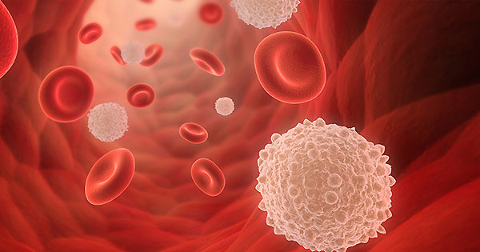
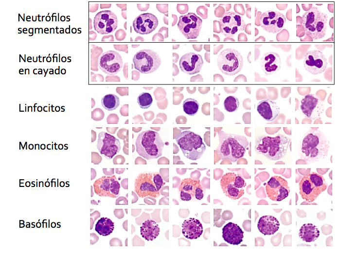
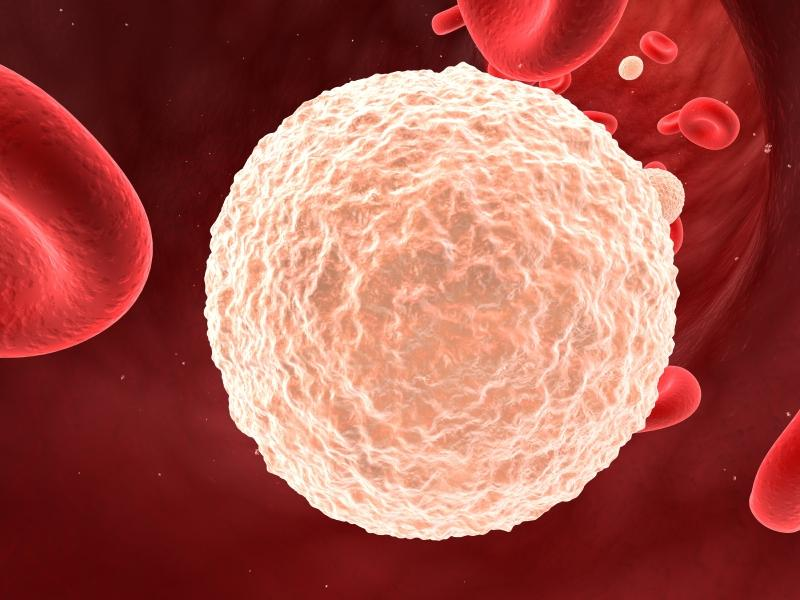
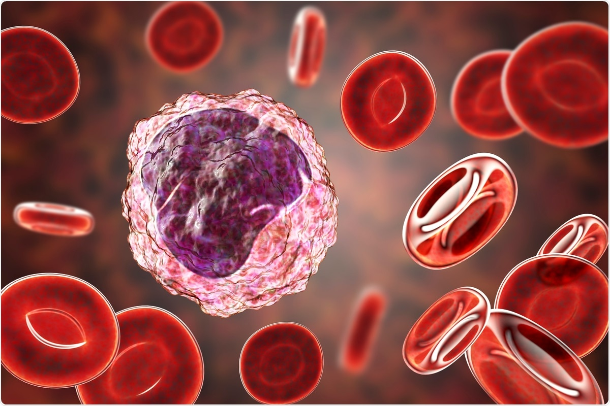
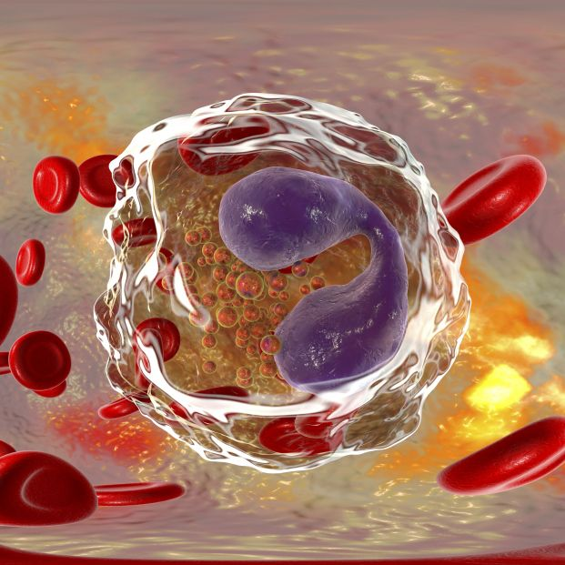
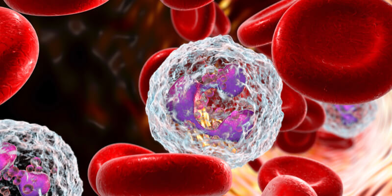

Ahora hablemos de los glóbulos blancos o leucocitos de nuestro cuerpo, nuestras defensas.
Tipos de leucocitos
Así es, no solo son glóbulos blancos.
Hay muchos tipos de leucocitos en nuestro cuerpo con una unica función, protegernos de agentes externos. Pero no te agobies, aqui te dejo un breve resumen de que hace cada uno.
LINFOCITOS
Hay dos tipos, pero su función básica es elaborar anticuerpos y destruir celulas tumorales.
MONOCITOS
Sirven como escudo contra sustancias y agentes externos extraños. Contrubyen al anterior mencionado, linfocito.
EOSINÓFILOS
Cumplen con la funcion de fagocitar, es decir, proteger al organismo comiendose al agente externo provocador de la patologia.
BASÓFILO
Son importante contra parasitos, aunque tambien liberan distintos componentes como citocinas,leucotrienos e histamina.
